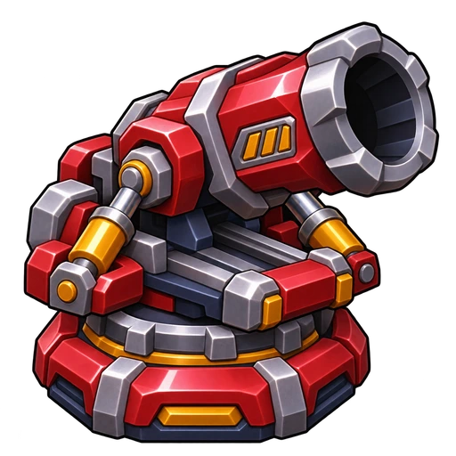
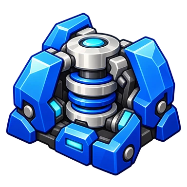

GRIDSHARD · CARD-01
Güçlü tek atış. Her atışta gövde aşınması.

SALDIRI · NADİR · ARENA 3 ADAYI
4 Akım · 240 CAN · 50 hasar3 sn çevrim · Atış başına 16 CAN bedeli
Kendi CAN'ı en az 1 kalır. Rakip normal saldırıyla yok edebilir.
Taban dik kalır. Her yön ayrı çizimden gelir; düz resmi çevirme veya aynalama kullanılmaz.
Yayınlandığında Arena 3 / 600 zirve kupada seviye 1 ücretsiz ve kalıcı açılacak. Kupa düşüşü veya sezon sonu yeniden kilitlemeyecek.
Gerçek savaş motorundan kaydedilen adımları incele.

Tek ağır atış, ardından kısa piston dönüşü. İsabet ayrı ses; mevcut ses yüksekliği standardında özgün sentez.
Ses kendiliğinden başlamaz.